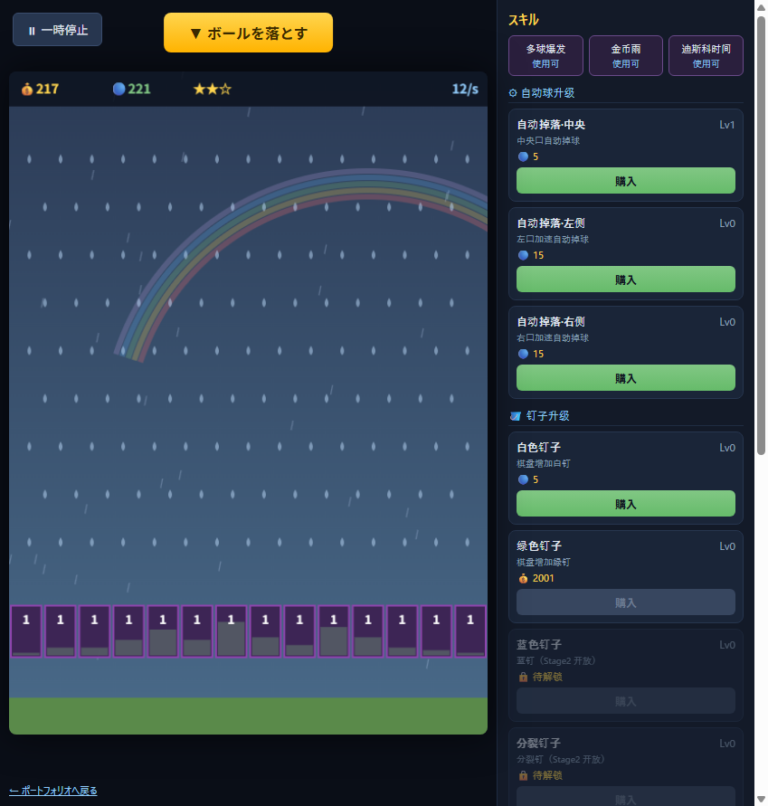

PlinkIdle風 クリッカー / 放置ゲーム
HTML5 + Canvas 2D で自作したインクリメンタルゲーム（Stage 1）
個人制作学習プロジェクト
JavaScriptCanvas
プロジェクト概要
Steam で公開されている Plinko 系の放置ゲーム（Demo 版）の仕組みを、DLL の解析を通じて学習し、 その上で完全にオリジナルのコードとアセットで再実装したスタディ作品です。 公式の画像・音声・ソースコードは一切使用せず、ゲームデザインの参考としてのみ解析しています。
実装範囲は Stage 1 のみ。ブラウザだけで動作し、インストールは不要です。
技術スタック
HTML5CSS3Canvas 2D原生 JavaScript（フレームワーク不使用）
Web Audio APIlocalStorageNode.js（テスト）GitHub Pages
実装した機能
- Canvas 独自の物理エンジン：ボールの落下、釘との衝突・反射、バケツへの入射判定
- 2 通貨経済（コイン / ボール）と、それぞれに紐づく強化ショップ（自動ボール / 釘 / 全体）
- 解析で得た汎用数曲線エンジン
y = a·(c·x+d)^(1/b+f·x)+eを再実装し、価格・効果曲線を駆動 - レアリティ（5 段階）のドロップ確率、バケツのレベル成長、★によるロック解除
- パーティクル（釘ヒット・入金演出）、Web Audio で合成した効果音、雨天テーマ背景
- スキル（マルチボール / コイン雨 / ディスコ）、ランダムイベント（ゴールデンクッキー）
- localStorage によるセーブ / ロード、ウィンドウリサイズ対応、一時停止
画面


技術的な工夫・困難だった点
- 数曲線の再現：原作のアセンブリを読み解き、20 個のアンカー値を再計算して 19 個が一致することを検証。価格が指数的に伸びる放置ゲームのバランスを再現。
- 物理の安定化：ボールが釘の真上で静止しないよう、衝突点の法線と水平速度を見てランダムに押し出す補正を追加。
- テスト：コアロジックを
node tests/test_core.jsで 33 項目自動検証（確率・曲線・物理・経済・解放条件）。 - 依存ゼロ：ビルドツールや外部ライブラリなしで、静的ファイルだけを GitHub Pages で公開。
テスト結果
node tests/test_core.js → 33 / 33 通過（確率分布・数式・物理・経済・解放条件）
※ 本作品は個人の学習および就職活動ポートフォリオとして制作したオリジナル実装であり、 特定の企業・ゲームの公式作品ではありません。記載の数値は学習目的での解析に基づく独立再現です。